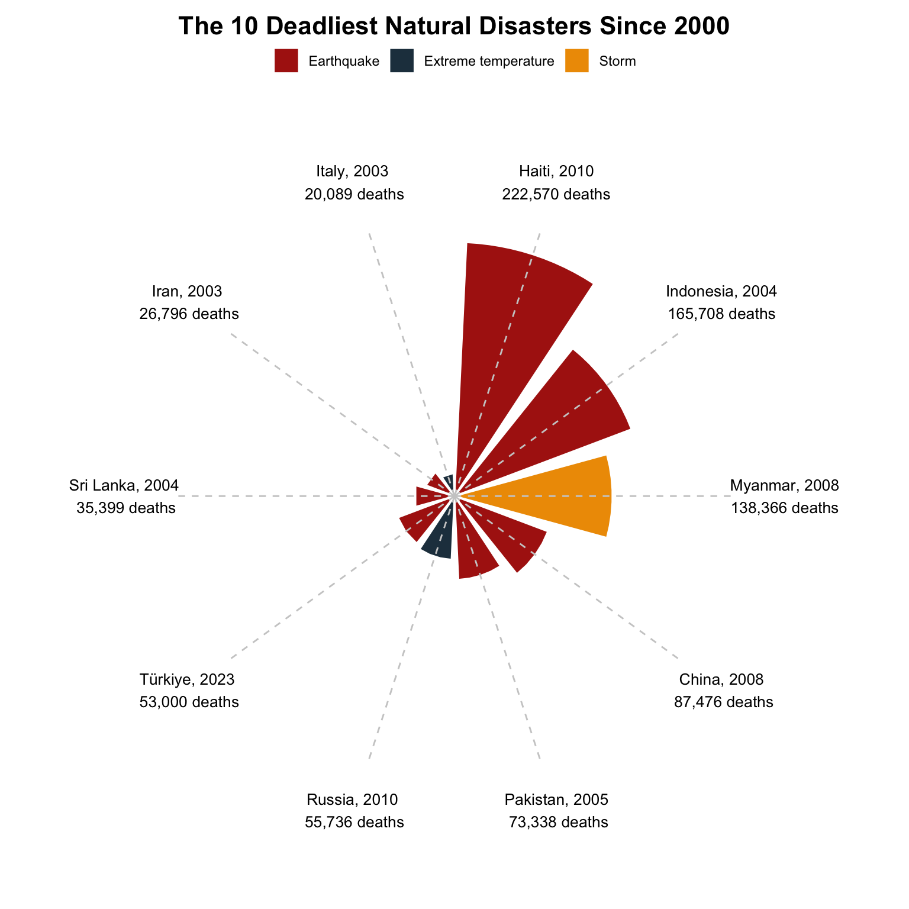
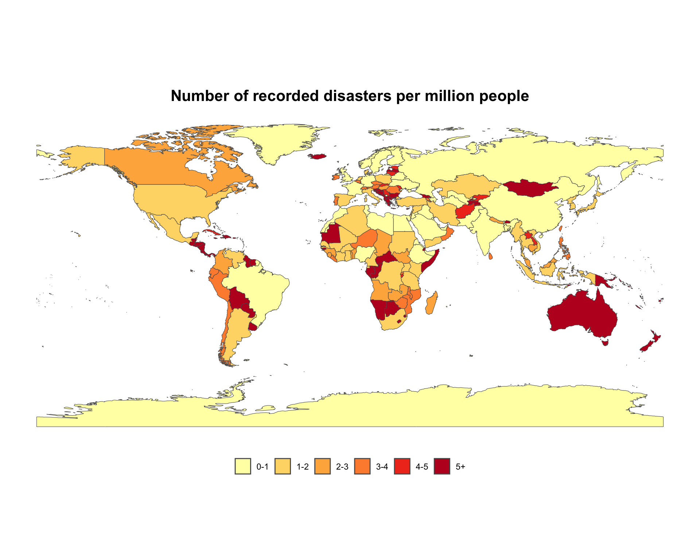
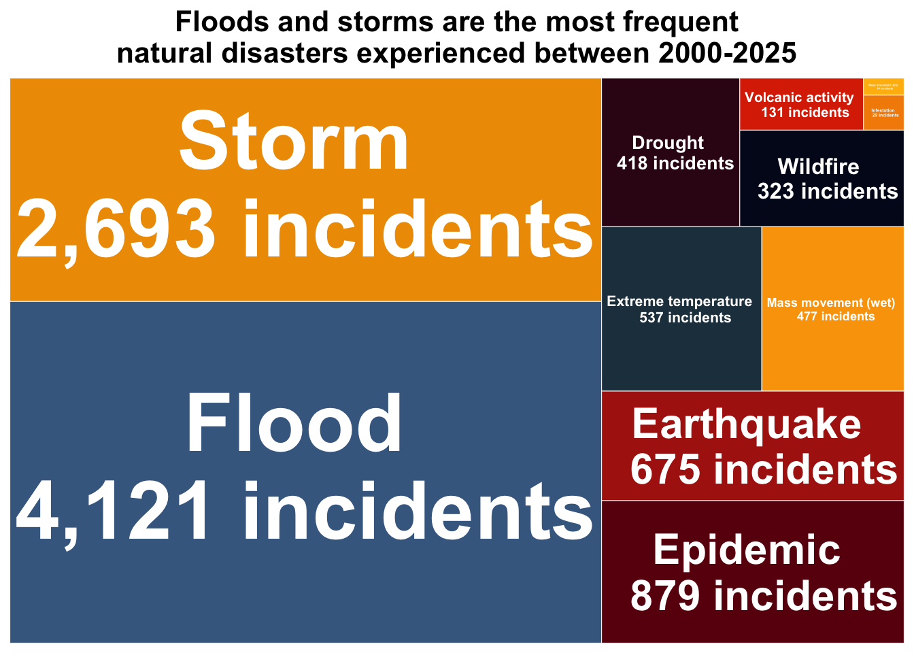

Show the code
library(tidyverse)
library(here)
library(readxl)
library(janitor)
library(ggplot2)
library(lubridate)
library(rnaturalearth)
library(treemapify)
library(RColorBrewer)The EM-DAT definition of a disaster:
“Situations or events which overwhelm local capacity, necessitating a request for external assistance at the national or international level. Disasters are unforeseen and often sudden events that cause significant damage, destruction, and human suffering” (EM-DAT, 2025).
Natural disaster dramatically impact communities worldwide, causing immense human suffering and damage. When tasked with creating an infographic, I chose to explore the complex patterns of natural disasters using data from the EM-DAT International Disaster Database spanning 2000-2025. This database contains extensive information of global disasters, making it ideal to visualize through multiple graphic forms. The main question I wanted to explore was:
What are the patterns, causes, and impacts of natural disasters?
I went about answering this with three sub-questions:
What have been the deadliest natural disasters in the past 25 years and which disaster type is most likely to cause fatalities?
How does natural disaster frequency vary across geographic regions?
What are the most common natural disaster types?
With these questions defined, my goal was to create an infographic that would provide viewers with a comprehensive overview of global natural disaster patterns in the most efficient, effective, and responsible way possible. I combined three different visualization types (a choropleth map, circular bar chart, and tree map) to answer my research questions while ensuring the final product would be both informative and visually engaging. Each visualization was designed to highlight different aspects of the data, working together to tell a complete story about natural disasters over the past 25 years.
The Emergency Events Database, known as EM-DAT, was created as a joint initiative between the Centre for Research on the Epidemiology of Disasters and the World Health Organization in 1988. It contains data on international hazards and disasters from 1900 to present day. The database contains information on over 26,000 mass disasters (EM-DAT, 2025).
I decided to look at international natural disasters in the years 2000-2025. The EM-DAT website states that “Pre-2000 data is particularly subject to reporting biases.” So while the data goes back to 1900, I chose to look at only the past 25 years, to minimize reporting bias. The data set contained 16,188 different disasters with 46 variables.
![Infographic about worldwide natural disasters in the years 2000-2025. Graphs include a choropleth map showing number of recorded disasters per million people per country, a circular bar chart showing the top 10 deadliest natural disasters, and a tree map showing the most frequent natural disasters. The deadliest natural disaster in the past 25 years was the 2010 Haiti earthquake with over 222,000 deaths. The most frequent natural disasters are Floods and Storms with 4,121 and 2,693 incidents, respectively.](natural_disasters_infographic2.jpg)
Before putting the whole thing together on Affinity Designer, I created the three separate visualizations in R. Full code for each visualization can be seen by clicking “Show the code.”
library(tidyverse)
library(here)
library(readxl)
library(janitor)
library(ggplot2)
library(lubridate)
library(rnaturalearth)
library(treemapify)
library(RColorBrewer)# Read in data
disasters <- read_excel(here("data/2000_world_disasters.xlsx"))
# Clean names and filter to just natural disasters
nat_dis <- clean_names(disasters) %>%
filter(disaster_group == "Natural") %>%
# Add date column
mutate(date = make_date(start_year, start_month, start_day))I chose to explore the first sub-question with a circular bar chart. This chart allowed for easy comparison of the fatalities in different events. I was also able to include multiple variables from the data including the disaster type, the number of fatalities, the year, and the country.
# Find top 10 deadliest disasters
top_disasters <- nat_dis %>%
arrange(desc(total_deaths)) %>%
slice_head(n = 10) %>%
# Simplify country names
mutate(country = recode(country,
"Russian Federation" = "Russia",
"Iran (Islamic Republic of)" = "Iran"))
# Prepare fatality data for viz
fatalities <- top_disasters %>%
# Add an index for positioning
mutate(
id = row_number(),
# Create labels
label = paste0(country, ", ", start_year, '\n', format(total_deaths, big.mark = ","), " deaths")
)
# Circular bar graph
ggplot(fatalities, aes(x = factor(id), y = total_deaths, fill = disaster_type)) +
# Add white space between bars
geom_col(width = 0.85, color = "white", size = 0.5) +
# Convert to polar coordinates
coord_polar() +
theme_void() +
# Add country, year, fatality labels on the outside
geom_text(
aes(y = max(total_deaths) * 1.3, label = label),
size = 3.5,
angle = 0
) +
# Dashed grey reference line
geom_segment(
aes(
x = factor(id),
y = 0,
xend = factor(id),
yend = max(total_deaths) * 1.1
),
linetype = "dashed",
color = "gray80",
size = 0.5
) +
# Fill colors for each disaster type
scale_fill_manual(
values = c(
"Earthquake" = "#ae2012",
"Storm" = "#ee9b00",
"Extreme temperature" = "#233d4d"
)
) +
# Add titles
labs(
title = "The 10 Deadliest Natural Disasters Since 2000"
) +
# Customize theme
theme(
plot.title = element_text(face = "bold", size = 16, hjust = 0.5, margin = margin(t = 10, r = 0, b = 5, l = 0)),
legend.position = "top",
legend.title = element_blank()
)
I wanted to include all countries in this visualization, making a choropleth map the best way to show global patterns. In order to normalize the variables, I decided to map the number of disasters per million people.
# Count disasters by country
disaster_counts <- nat_dis %>%
group_by(country, iso) %>%
summarise(disaster_count = n())
# Get world map polygons
world <- ne_countries(scale = "medium", returnclass = "sf")
# Join count data and map data
map_data <- world %>%
left_join(disaster_counts, by = c("iso_a3" = "iso")) %>%
mutate(
disaster_count = replace_na(disaster_count, 0),
# Calculate disasters per million
disaster_per_million = ((disaster_count / pop_est) * 1000000)) %>%
# Remove NA from disaster per million
filter(!is.na(disaster_per_million))
# Create bins for mapping
map_data <- map_data %>%
mutate(
rate_category = cut(
disaster_per_million,
breaks = c(0, 1, 2, 3, 4, 5, 1000),
labels = c("0-1", "1-2", "2-3", "3-4", "4-5", "5+"),
include.lowest = TRUE
)
)
# Map of disasters per million people
ggplot() +
geom_sf(data = map_data, aes(fill = rate_category)) +
# Customize legend
scale_fill_brewer(palette = "YlOrRd",
guide = guide_legend(
direction = "horizontal",
nrow = 1
)
) +
# Add titles
labs(
title = "Number of recorded disasters per million people"
) +
theme_minimal() +
# Customize theme
theme(
plot.title = element_text(face = "bold", size = 16, hjust = 0.5, margin = margin(t = 10, r = 0, b = 5, l = 0)),
legend.position = "bottom",
legend.title = element_blank(),
panel.grid.major = element_blank(),
panel.grid.minor = element_blank()
)
In order to effectively visualize the common natural disasters, I first filtered the data to disasters that had occurred at least 10 times in the past 25 years. I then decided a tree map would be the best way to visualize this data. I was able to include both the disaster type and their frequency over the past 25 years in the labels.
# Group and summarize natural disaster types
disaster_summary <- nat_dis %>%
group_by(disaster_type) %>%
summarise(
count = n()
) %>%
# Filter for more significant disaster types
filter(count > 10) %>%
arrange(desc(count))
# Tree map
ggplot(
disaster_summary,
aes(
area = count,
fill = disaster_type,
label = paste(
disaster_type,
paste0("\n", format(count, big.mark = ","), " incidents")
)
)
) +
geom_treemap(
color = "white",
size = 0.5,
alpha = 1.0
) +
# Add text in tree map
geom_treemap_text(
fontface = "bold",
color = "white",
place = "centre",
grow = TRUE,
min.size = 0.25
) +
scale_fill_manual(values = c(
"Flood" = "#456990",
"Storm" = "#ee9b00",
"Epidemic" = "#6a040f",
"Earthquake" = "#ae2012",
"Extreme temperature" = "#233d4d",
"Mass movement (wet)" = "#faa307",
"Drought" = "#370617",
"Wildfire" = "#03071e",
"Volcanic activity" = "#dc2f02",
"Infestation" = "#f48c06",
"Mass movement (dry)" = "#ffba08"
)) +
theme_minimal() +
theme(
legend.position = "none",
plot.title = element_text(
face = "bold",
size = 16,
hjust = 0.5
)) +
# Add titles
labs(
title = "Floods and storms are the most frequent\nnatural disasters experienced between 2000-2025"
)
While the original visualizations were created in R, the annotations, titles, and typography were all customized in Affinity Designer.
Graphic Forms - The three graphic forms I chose were a choropleth map, a circular bar chart, and a tree map. The choropleth map allowed me to effectively visualize patterns surrounding regions affected by natural disasters. I normalized the variable by using disasters per million people and create a comparison based on country population. The circular bar chart allowed me to take a deeper look at the impacts of specific natural disasters. It also allowed for easy comparison with each wedge length corresponding to fatality count. With the tree map I was able to easily visualize which were the most frequent disaster types in the past 25 years by providing immediate visual cues about frequency based on size comparison.
Text - The title “25 Years of Natural Disasters” clearly stated the subject and time frame of the infographic, while the subtitle gave more detail about specifics of the exploration. I decided the disaster definition was crucial context for the infographic, so centered and highlighted it. The annotations for the two graphs on the bottom were included to highlight key takeaways. The data source and date of access were also included, as they are important information for any data exploration.
Themes - I chose a neutral background as this is a serious subject matter and it also allowed for contrast with the other elements.
Colors - For the choropleth map, I chose a binned sequential scale for the color palette in order to easily visualize regions with more of fewer disasters, with deeper reds indicating high risk areas. For the circular bar chart, I assigned each disaster type a specific color, which I then built off of in the tree map.
Typography - For the typography, I chose to use Nunito Sans for all graph elements as it felt both appealing and appropriate. I decided to use consistent typography across the whole infographic to give it a cohesive feel.
General Design - I designed the infographic so it moved from broad at the top with the global map, to graphs about more specific aspects (specific events and disaster types) at the bottom. I tried to minimize non-data elements while simultaneously highlighting important aspects of the data.
Contextualizing the data - The data was contextualized with the disaster definition, the time period covered, and clear labels to provide geographical and temporal context.
Primary Message - The infographic highlights three main messages. It shows the regions most vulnerable to natural disasters, it shows the deadliest natural disaster (earthquakes), and it shows the most frequent natural disasters (storms and floods).
Accessibility - While in the creation process, I routinely check to make sure my color palette was colorblind-friendly.
DEI lens - While I could have focused this data on specific regions, I decided global representation was important. I also normalized the choropleth map by showing disasters per million people, in order to avoid bias towards more populous countries.
@online{cardelle2025,
author = {Cardelle, Josephine},
title = {Exploring 25 Years of Natural Disasters},
date = {2025-03-11},
url = {https://jocardelle.github.io/posts/2025-03-11-natural-disasters-infographic/},
langid = {en}
}